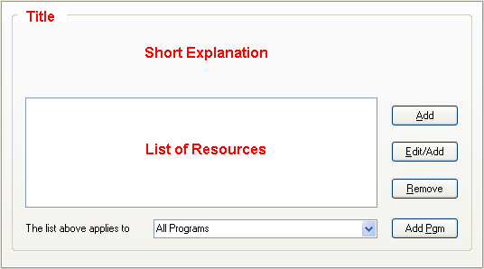

Resource Access Settings
"Resource Access" Settings Group
Sandboxie Control > Sandbox Settings > Resource Access

Programs that run in a sandbox are generally not allowed to access system resources directly. In some cases, it may be desirable to make exceptions to this rule. The settings here display and change that set of exceptions.
Examples where exceptions are convenient or necessary:
- Allow direct access to some specific folder. For example, let the Web browser place downloads directly in a Downloads folder.
See the File Access category below. - A program may need access to some resource for correct operation. If the program is known and trusted, it is reasonable to make such an exception. See Known Conflicts for some examples.
Configuration changes do not apply to programs that are already running sandboxed at the time the configuration is changed. To keep things simple, you are advised to make configuration changes when no programs are running in the sandbox.
General Information
Each settings page within the Resource Access group generally has the following characteristics:

- There is a Title for the page, for example, Direct File Acccess or Read-Only Registry Access.
-
There is a Short Explanation describing what the setting does.
-
There is a List of Resources that shows the resources that get a special treatment.
- Depending on the particular setting, it may mean that those resources will be fully accessible to sandboxed programs.
- Or it may mean that these resources will not be accessible at all.
- The Short Explanation briefly describes the relationship between those resources and the programs which access them.
- You should also consult the documentation below for the particular setting, to fully understand what this means.
- The resources in the list may apply only to a particular program. Generally, however, they apply to All Programs.
-
There is an Add button which adds a new resource entry to the list.
- There is an Edit/Add (sometimes just Edit) which edits a resource entry in the list, or adds a new resource entry to the list.
-
There is a Remove button which removes a resource entry from the list.
-
There is a list-box labeled The list above applies to. This list-box associates the resources with a specific program.
- By default, resources apply to All Programs as shown in the example above.
- You can select to apply resources to a specific program, by selecting that program from the list-box.
- You can also type the name of the specific program directly into the list-box.
- You can also use the Add Pgm button to select a specific program by navigating to its folder.
File Access
Sandboxie Control > Sandbox Settings > Resource Access > File Access
This category manages the following types of resources: Files, folders, drives, and other devices.
See General Information above for more information about editing resources and associating resources with particular programs.
File Access > Direct Access
Allow direct access to some file or folder, bypassing the supervision of Sandboxie. For example, if you add a folder C:\Downloads, then a program running under Sandboxie will be able to create or update files in that folder.
Note that Direct Access exclusions do not apply when the program itself resides in the sandbox. For example, suppose that you allow direct access to a C:\Downloads folder, and then you go on to install a new Web browser into the sandbox. This new sandboxed browser will not have direct access to the C:\Downloads folder.
Related Sandboxie Ini settings: OpenFilePath
File Access > Full Access
Similar to Direct Access, but always applies, even if the sandboxed program itself resides in the sandbox. For better protection, you are advised to use Direct Access rather than Full Access whenever possible.
Related Sandboxie Ini settings: OpenPipePath
File Access > Read-Only Access
This access mode excludes the effects of sandboxing on a file (or folder) resource, while allowing a program to read, but not modify, the real resource.
Related Sandboxie Ini settings: ReadFilePath
File Access > Write-Only Access
This access mode hides all files and folders which are located within the selected folder outside the sandbox. However, programs in the sandbox can create new files within the corresponding folder in the sandbox.
This setting can only be used effectively on folders. If a file is selected, the effect is the same as the Blocked Access setting (see below).
Related Sandboxie Ini settings: WriteFilePath
File Access > Blocked Access
Deny all access to the resource, for example to a folder containing sensitive data. Blocked Access settings take precedence over all other resource access rules. For example, if an exclusion for C:\Downloads appears in both Direct Access and Blocked Access, the latter will apply, denying all access to the folder.
Related Sandboxie Ini settings: ClosedFilePath
Registry Access
Sandboxie Control > Sandbox Settings > Resource Access > Registry Access
This category manages registry key resources. The registry is a mechanism provided by Windows for programs to store configuration and settings.
See General Information above for more information about editing resources and associating resources with particular programs.
Registry Access > Direct Access
Allow direct access to a registry key resource. Note that Direct Access exclusions do not apply when the program itself resides in the sandbox. This is described in more detail in the File Access category above. Note that unlike in the File Access category, there is no Full Access access mode for registry keys.
Related Sandboxie Ini settings: OpenKeyPath
Registry Access > Read-Only Access
This access mode excludes the effects of sandboxing on a registry key resource, while allowing a program to read, but not modify, the real resource.
Related Sandboxie Ini settings: ReadKeyPath
Registry Access > Write-Only Access
This access mode hides all registry data which is located within the selected registry key outside the sandbox. However, programs in the sandbox can create new registry data within the corresponding folder in the sandbox.
Related Sandboxie Ini settings: WriteKeyPath
Registry Access > Blocked Access
Deny all access to a registry key resource, for example to a key containing Windows policy settings. Blocked Access settings take precedence over all other resource access rules. For example, if an exclusion for a registry key appears in both Direct Access and Blocked Access, the latter will apply, denying all access to the registry key.
Related Sandboxie Ini settings: ClosedKeyPath
IPC Access
Sandboxie Control > Sandbox Settings > Resource Access > IPC Access
This category manages exclusions for NT IPC objects. These resources are created by programs running the system as a way to coordinate operations or otherwise communicate.
See General Information above for more information about editing resources and associating resources with particular programs.
IPC Access > Direct Access
Allow direct access to an IPC object resource. Note that unlike in the File Access and Registry Access categories, Direct Access exclusions for IPC objects always apply to all sandboxed programs.
Related Sandboxie Ini settings: OpenIpcPath
IPC Access > Blocked Access
Deny all access to an IPC object resource. Blocked Access settings take precedence over all other resource access rules. For example, if an exclusion for an IPC object appears in both Direct Access and Blocked Access, the latter will apply, denying all access to the object.
This setting can be used to override default IPC Access > Direct Access settings in Sandboxie, and block the access. For example, by default Sandboxie allows sandboxed programs to access the audio device. To override this and cut off audio output by sandboxed programs, add an exclusion for \RPC Control\AudioSrv.
Related Sandboxie Ini settings: ClosedIpcPath
Window Access
Sandboxie Control > Sandbox Settings > Resource Access > Window Access
This category manages exclusions for window classes. These resources are primarily related to windows displayed on the screen, but can also be used by programs as a way to coordinate operations or otherwise communicate. You can specify which window classes, that were created outside the sandbox, will be available for use by sandboxed programs.
See General Information above for more information about editing resources and associating resources with particular programs.
Related Sandboxie Ini settings: OpenWinClass
COM Access
Sandboxie Control > Sandbox Settings > Resource Access > COM Access
This category manages exclusions for COM classes. These resources represent objects which are used as a way to coordinate operations or otherwise communicate. You can specify the COM class identifiers for those COM objects that exist outside the sandbox, and which should be accessible to sandboxed programs.
See General Information above for more information about editing resources and associating resources with particular programs.
Related Sandboxie Ini settings: OpenClsid